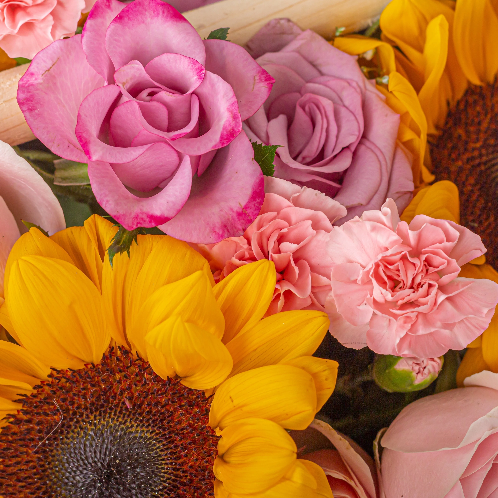

Flowers are the vibrant reproductive structures of angiosperms (flowering plants) whose primary biological purpose is to facilitate pollination and ensure the continuation of the species. They attract pollinators like bees, butterflies, and birds through an enticing combination of brilliant colours, distinct shapes, and sweet nectar. Structurally, a typical flower consists of petals, sepals, and reproductive organs (the male stamen and female pistil) that eventually develop into seed-bearing fruits. Beyond their vital ecological role, flowers hold profound cultural and emotional significance for humans worldwide, serving as universal symbols of beauty, love, and celebration, while also providing essential ingredients for perfumes, medicines, and culinary dishes.